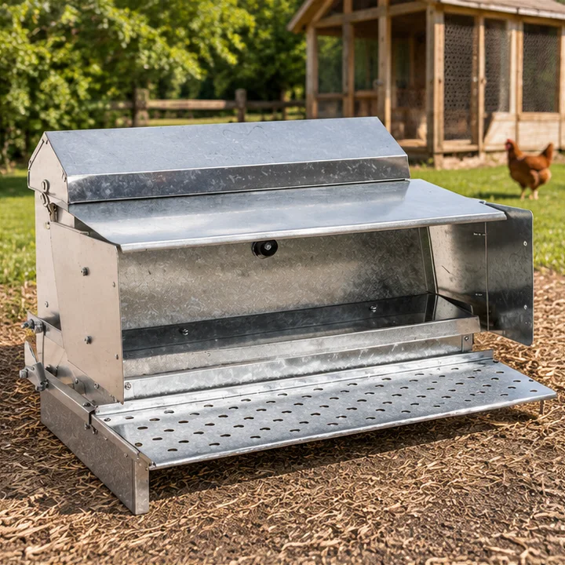
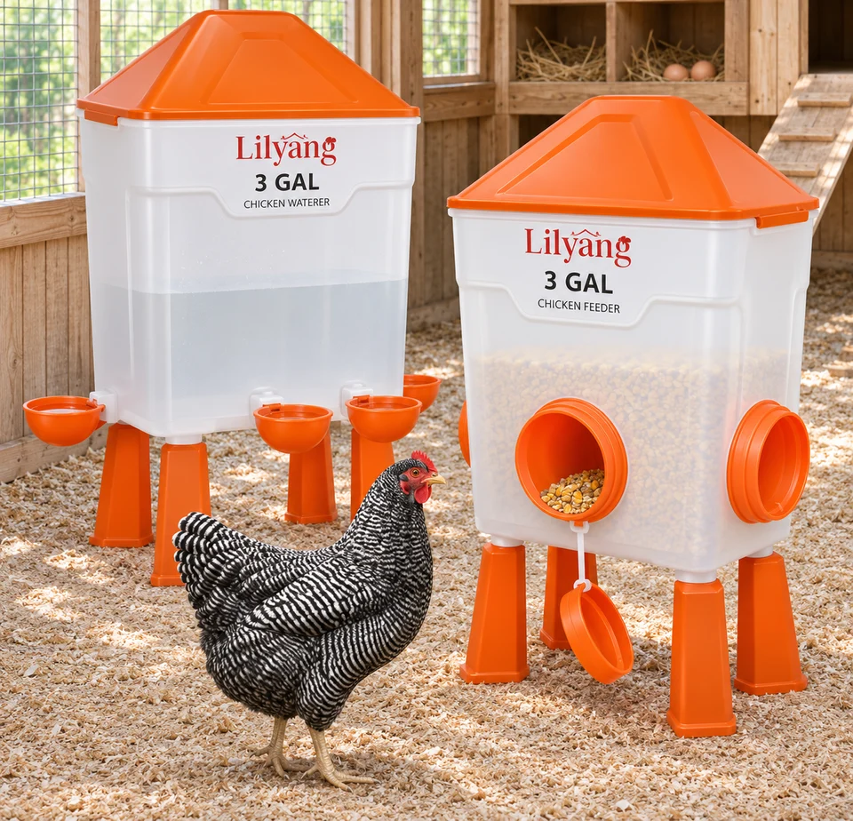
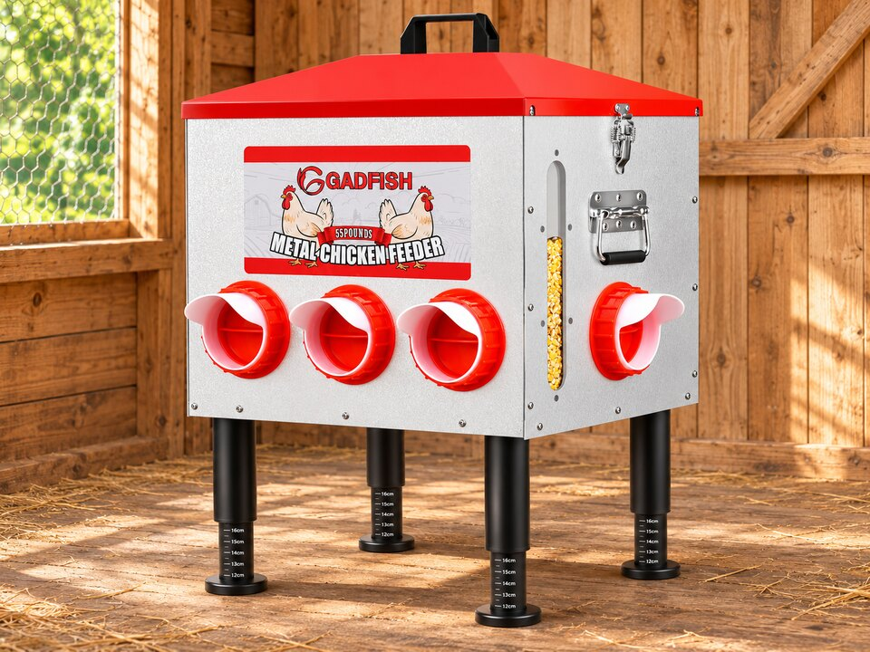
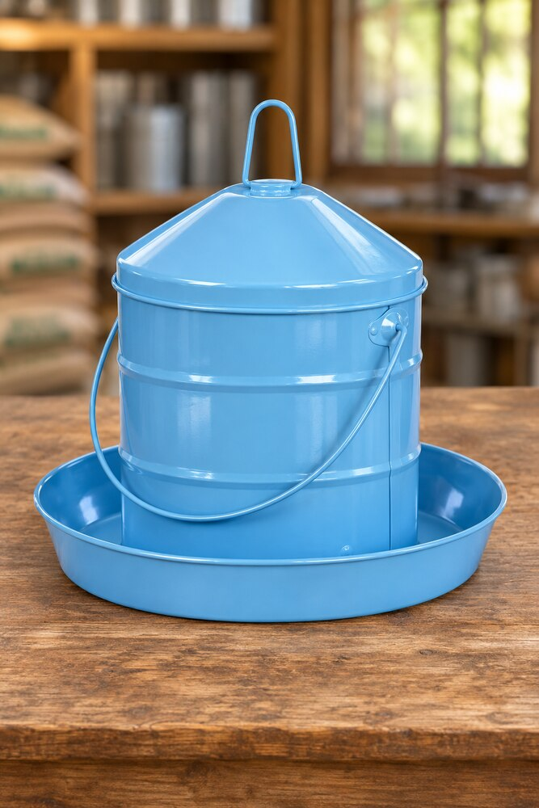
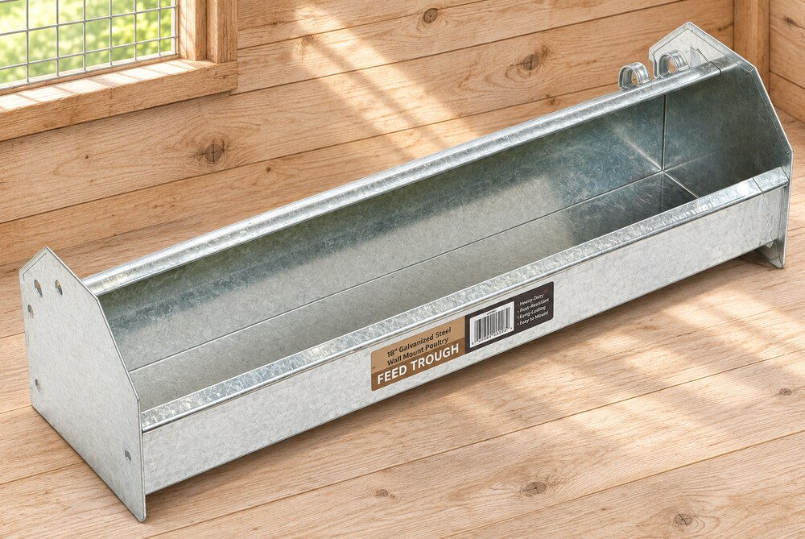
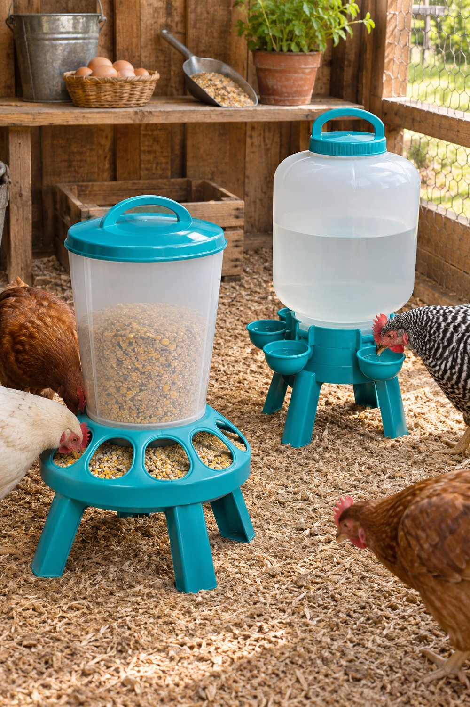

Comederos

Comedero colgante de canaleta para aves, 6 x 3,5 cuartos
Puede encajar si buscas un formato de alimentación que puedas instalar y adaptar al tamaño de tus aves.
Tienda
21 productos. El precio se ve en Amazon.
Como afiliado de Amazon, Granja Rentable gana comisiones por compras que cumplan los requisitos. La compra se hace en Amazon, no en esta web.
Empieza por lo que necesitas resolver. Las guías y el registro son gratuitos; puedes consultarlos antes de valorar un cambio de equipo.
En el catálogo de abajo, busca por marca, modelo o formato. Si escribes varias palabras, se muestran los productos que coinciden con todas. Encontrar un producto no demuestra que sea adecuado para tu lote.
Ningún producto de esta categoría coincide. Prueba una palabra más general o una marca.
Puede encajar si buscas un formato de alimentación que puedas instalar y adaptar al tamaño de tus aves.

Puede encajar si buscas un formato de alimentación que puedas instalar y adaptar al tamaño de tus aves.

Puede encajar si buscas una tolva de pedal de esta capacidad y puedes supervisar la adaptación del lote. Comprueba el acceso de las aves más pequeñas. No hemos medido su ahorro ni su eficacia frente a roedores.

Permite comparar una capacidad nominal mayor que la versión de 20 libras. Comprueba el espacio de instalación y el acceso al pedal. La capacidad no determina por sí sola la autonomía ni cuántas aves pueden comer a la vez.

Ofrece una capacidad nominal intermedia entre los modelos de 20 y 40 libras de esta comparación. Consulta el manual y comprueba el uso de cada ave. No hemos medido ahorro ni garantizamos ausencia de desperdicio o roedores.

Puede encajar si buscas un formato de alimentación que puedas instalar y adaptar al tamaño de tus aves.

Puede encajar si buscas un formato de alimentación que puedas instalar y adaptar al tamaño de tus aves.

Puede encajar si buscas un formato de alimentación que puedas instalar y adaptar al tamaño de tus aves.

Puede encajar si buscas un formato de alimentación que puedas instalar y adaptar al tamaño de tus aves.

Puede servir para reducir la exposición del alimento entre comidas. Comprueba que tus gallinas accionan el pedal y que la base queda nivelada.

Útil si ya ofreces ambos por separado y quieres agruparlos en un punto. Verifica cómo se monta y si podrás retirar los restos y limpiar cada compartimento con facilidad.

Puede encajar en un lote pequeño si necesitas cambiar la altura del comedero con el tiempo. Comprueba cuánto pienso cabe con el formato que usas y si la base queda estable sobre el suelo del gallinero.

Encaja si buscas cargar más pienso en un solo depósito y tienes espacio alrededor. Comprueba la altura para las aves más pequeñas y observa si las ocho bocas son accesibles una vez instalado.

Encaja si necesitas un punto de alimentación con capacidad para varios días o quieres ajustar su altura. La cubierta inclinada protege la parte superior y dificulta que las aves se posen. Revisa la estabilidad y la resistencia del anclaje con el depósito lleno.

Los ganchos permiten despejar el suelo y ajustar la altura de acceso. Mide el hueco de la malla y deja espacio para descolgar la canaleta cuando toque limpiarla.

Encaja si quieres repartir el acceso alrededor del depósito. Mide el espacio de paso y ajusta la altura pensando en las aves más pequeñas.

Encaja si varias aves comen alrededor del recipiente. Comprueba que el ave más pequeña alcanza el pienso con la altura de montaje prevista.

Puede encajar si quieres ahorrar espacio en el suelo del gallinero y cuentas con un anclaje adecuado. La suspensión permite ajustar la altura al lote. Confirma las dimensiones, las piezas incluidas y el espacio libre alrededor de la abertura antes de comprar.

Un formato compacto para un grupo pequeño. Calcula por separado cuánto duran el agua y el alimento en tu instalación.

Encaja para instalar alimento y agua a la vez. Coloca ambos donde puedas abrir la tapa y comprobar las salidas sin mover todo el kit.

Encaja si buscas renovar ambos puntos a la vez. Compara las dimensiones y el acceso de tus aves y comprueba las copas antes de depender del sistema.